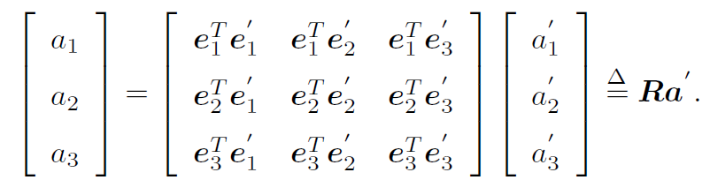
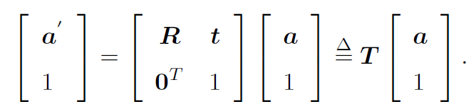
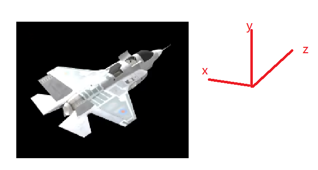

视觉slam之三维空间刚体运动的简述
对于旋转矩阵，欧拉角，四元数，李群概念进行简述与再次厘清
旋转矩阵
三位空间中的物体位置可以由一个线性空间的基（e1,e2,e3）和在该基下的坐标（a1,b1,c1）来描述。
当然三维空间中同一位置在不同坐标基下的坐标不一样
(e1,e2,e3)(a1,a2,a3)^T=(e1’,e2’,e3’)(b1,b2,b3)^T
将等式同时左乘(e1,e2,e3)^T，则上式等号左边出现一个单位矩阵
(a1,a2,a3)^T=(e1,e2,e3)^T(e1’,e2’,e3’)(b1,b2,b3)^T
即得此式

矩阵R即为旋转矩阵。它是一个行列式为1 的正交矩阵。
三维空间中刚体运动的平移就引入了变换矩阵T，给坐标增加一个维数，这也称为其次坐标。

这样就能让带平移的三维空间表述更加简明。
欧拉角
旋转矩阵用9个参数表示3个自由度，而变换矩阵用16个参数表示6个自由度，存在资源的浪费。
首先需要意识到的一点是欧拉角描述的是变换，而不是运动。所以后文尽量用“变换”而不是“转动”来强调这一区别。
对于一个物体来说是对于其自身三维笛卡尔坐标系进行旋转。在相同的参数下，在变换中不同轴变换的先后顺序不同，物体的最终姿态一般情况下并不会相同。
有些地方欧拉角用翻滚，俯仰，偏航(Roll Pitch Yaw, RPY)来表示，可以用飞机的运动来理解。

为了便于说明，我们设定各轴的旋转角度为[x,y,z]=[10°,10°,0°]，旋转顺序为xyz，那么在旋转过程中，先对物体自身坐标系的x轴进行转动，同时物体自身坐标系也发生了改变，所以y轴需要在新的变换后的轴上进行变换，同理z轴也会被xy轴变换影响。
在设定好坐标变换顺序后，先变换的坐标轴会对后变换的坐标轴造成影响，而后变换的坐标轴不会对先前变换的坐标轴造成影响。
一些人可能以为经过[x,y,z]=[10°,10°,0°]，xyz顺序变换后，能直接将通过旋转变换后物体的x轴，从而改为[x,y,z]=[11°,10°,0°]。事实上这是一个新的变换，一切都要从初始状态按轴顺序变换而来。即使有所谓的”连续“，实际上是多次不同的变换的叠加而产生的假象，从而强调欧拉角这是变换而不是运动。要从初始状态按轴顺序变换而来就能很容易解释先变换的坐标轴会对后变换的坐标轴造成影响，反之不会。
了解了这一概念，从而可以解释万向死锁这一问题，我们可以假设有这一种情况[x,y,z]=[5°,90°,0°]，将y轴变换后，此时z轴会与x轴（x轴并不随后续的yz轴发生变换）重合，这意味着[x,y,z]=[5°,90°,0°]可能与[x,y,z]=[0°,90°,5°]变换结果是一样的，同时意味着物体丢失了一个维度。
四元数
i j k
首先需要从复数领域进行